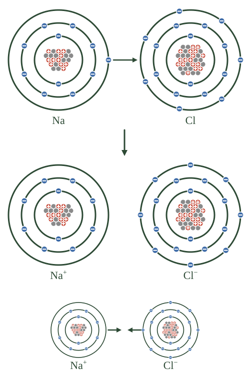
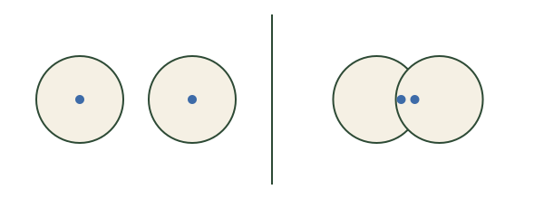
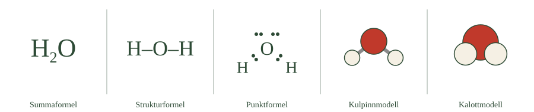

- Det som håller ihop atomer kallas kemisk bindning
- Atomer söker sig mot ett fullt yttersta skal
- Fullt yttersta skal kallas ädelgasstruktur
- Det finns tre vägar dit: avge, ta upp eller dela elektroner
- De tre vägarna ger tre sorters bindningar
Atomer sitter sällan ensamma. De flesta ämnen du känner till består av atomer som satt ihop sig med andra atomer, och det som håller ihop dem kallas kemisk bindning.
Vad atomerna är ute efter
I förra avsnittet lärde du dig om valenselektroner — elektronerna i det yttersta skalet — och om ädelgaserna, som redan har sitt yttersta skal fullt. Ädelgaserna reagerar nästan inte alls, eftersom de har det de behöver. Och det visar sig att alla andra atomslag beter sig som om de vill ha samma sak: ett fullt yttersta skal.
För de flesta atomslag vi arbetar med betyder fullt skal åtta elektroner ytterst. Att ha det kallas ädelgasstruktur, eftersom det är samma uppsättning som en ädelgas har.
Tre vägar dit
En atom kan nå fullt yttersta skal på tre olika sätt. Den kan avge elektroner, vilket passar atomer som bara har en eller två ytterst — blir de av med dem är skalet under redan fullt. Den kan ta upp elektroner, vilket passar atomer som nästan har åtta och bara saknar någon enstaka. Eller så kan den dela elektroner med en annan atom, så att båda får räkna samma elektroner som sina. De tre vägarna ger tre olika sorters bindningar, och det är dem resten av avsnittet handlar om: jonbindning, kovalent bindning och metallbindning.
- Kemisk bindning är det som håller samman atomer eller joner i ett ämne
- Valenselektronerna avgör hur och om en atom binder
- Ädelgasstruktur — fullt yttersta skal — är det stabila tillståndet
- Atomer kan avge, ta upp eller dela elektroner
- Det ger jonbindning, kovalent bindning och metallbindning
Atomer kan reagera med varandra och bilda nya ämnen. Det som håller ihop atomerna eller jonerna i ett ämne kallas kemiska bindningar.
För att förstå varför bindningar bildas behöver man titta på atomernas valenselektroner, alltså elektronerna i valensskalet.
Atomer strävar mot ett stabilt yttersta elektronskal. För många atomslag innebär det att det yttersta skalet innehåller åtta elektroner, vilket brukar kallas ädelgasstruktur — ädelgaserna har redan fullt yttersta skal och reagerar därför mycket lite.
Atomer kan nå ett stabilare tillstånd på tre olika sätt: de kan avge elektroner, ta upp elektroner eller dela elektroner med andra atomer. Vilken väg som är möjlig beror på hur många valenselektroner atomen har från början, och därmed på var i det periodiska systemet den står.
De tre vägarna leder till tre typer av kemiska bindningar: jonbindning, kovalent bindning och metallbindning.
Atomer vill ingenting
Vi säger att atomer "strävar efter" fullt yttersta skal, och att de "vill" nå ädelgasstruktur. Det är ett bekvämt sätt att prata, men det är inte sant. En atom vill ingenting. Den har inga mål och fattar inga beslut.
Det som faktiskt styr är energi.
Varje möjlig anordning av atomer och elektroner har en viss energi. Naturen hamnar över tid i tillstånd med låg energi — inte för att något strävar dit, utan för att tillstånd med hög energi är instabila och förr eller senare övergår i något annat, medan de med låg energi blir kvar.
En vattenmolekyl har lägre energi än två lösa väteatomer och en lös syreatom. Därför bildas vatten, och därför faller det inte isär av sig självt. Det handlar inte om vilja, utan om vilket tillstånd som håller.
Att fullt yttersta skal ofta motsvarar låg energi är alltså inte en regel naturen följer — det är en observation vi gjort, och sedan förkortat till en tumregel.
Och tumregeln har undantag
Oktettregeln — att åtta elektroner ytterst är målet — fungerar utmärkt för de lätta atomslagen i period 2. Kol, kväve, syre och fluor följer den nästan alltid.
Längre ner i systemet går det sämre. Svavel kan ha tio eller till och med tolv elektroner ytterst i vissa föreningar, eftersom det har d-orbitaler tillgängliga som period 2-ämnena saknar. Bor nöjer sig ofta med sex. Och väte har aldrig åtta — dess första skal rymmer bara två.
Om modellen: oktettregeln är inte en naturlag utan en förenkling som stämmer för de atomslag högstadiekemin mest handlar om. Den är mycket användbar och du kan lita på den i det här avsnittet. Men på gymnasiet kommer du att möta undantagen, och då är det bra att veta att de inte är fel i regeln — regeln var aldrig mer än en sammanfattning av vad som råkar ge låg energi.
- Jonbindning uppstår mellan en positiv och en negativ jon
- En metall ger bort elektroner, en icke-metall tar emot
- Det som håller ihop dem är attraktionen mellan laddningarna
- Jonerna sitter inte två och två, utan i ett stort regelbundet mönster
- Natrium och klor bildar natriumklorid — vanligt koksalt
Den första sortens bindning uppstår mellan joner. I avsnitt 1 såg du hur en litiumatom kunde bli en litiumjon genom att tappa sin ytterelektron, och nu ska vi se vad som händer när en atom som vill göra sig av med en elektron möter en atom som vill ta emot en.
Natrium möter klor
Natrium står i grupp 1 och har en valenselektron. Precis som hos litium hålls den kvar svagt, och natrium gör sig gärna av med den — när det sker blir natrium en positiv jon, \(\ce{Na+}\).
Klor står i grupp 17 och har sju valenselektroner, så klor saknar en enda för att komma upp i åtta. Tar kloratomen emot en elektron blir den en negativ jon, \(\ce{Cl-}\).
Möts de passar det perfekt: natrium ger bort exakt det klor vill ha. Elektronen flyttar över, och kvar finns en positiv natriumjon och en negativ kloridjon.

Vad som håller ihop dem
Nu kommer det avgörande. Jonerna är laddade, och laddningar med olika tecken attraherar varandra. Den positiva natriumjonen och den negativa kloridjonen dras därför mot varandra, och den dragningen är vad vi kallar jonbindning.
Lägg märke till att bindningen inte är något som sitter mellan dem. Den är attraktionen mellan laddningarna — samma kraft som du lärde dig om i avsnitt 1.
Inte två och två
Det är lätt att tänka sig att en natriumjon hittar en kloridjon och att de sedan håller ihop som ett par, men så är det inte. I ett korn av natriumklorid finns ofantligt många joner, och varje positiv jon omges av negativa åt alla håll medan varje negativ jon omges av positiva. Alltihop sitter ihop i ett stort, regelbundet mönster.
Det förklarar varför ämnen med jonbindning oftast är fasta vid rumstemperatur och behöver hög värme för att smälta — man måste bryta upp väldigt många bindningar samtidigt. Natriumklorid, NaCl, är vanligt koksalt, det du har i saltkaret.
- Jonbindning bildas mellan positiva och negativa joner
- Metaller avger elektroner och blir positiva joner
- Icke-metaller tar upp elektroner och blir negativa joner
- Bindningen är den elektriska attraktionen mellan jonerna
- Jonerna ordnar sig i ett regelbundet mönster, inte i enskilda molekyler
En jonbindning bildas mellan positiva och negativa joner.
Metaller har ofta få valenselektroner och kan därför avge elektroner. När en atom avger elektroner får den fler protoner än elektroner och blir en positiv jon.
Icke-metaller har ofta många valenselektroner och kan i stället ta upp elektroner. Då får atomen fler elektroner än protoner och blir en negativ jon.
Ett exempel är när natrium reagerar med klor.
En natriumatom har en valenselektron. Avger natriumatomen denna elektron får den ett fullt elektronskal innanför och blir en positiv natriumjon:
En kloratom har sju valenselektroner och behöver en till för att få fullt yttersta skal. När kloratomen tar upp en elektron bildas en negativ kloridjon:
Natriumjonen är positivt laddad och kloridjonen negativt laddad. Positiva och negativa laddningar attraherar varandra, och det är den elektriska attraktionskraften mellan jonerna som kallas jonbindning.
På detta sätt kan natrium och klor bilda natriumklorid, NaCl — vanligt koksalt.
Jonerna sitter inte parvis
I ett korn natriumklorid finns inga enskilda NaCl-molekyler. I stället finns ett mycket stort antal natriumjoner och kloridjoner ordnade i ett regelbundet mönster, där varje positiv jon omges av negativa och varje negativ jon omges av positiva.
De starka elektriska krafterna mellan jonerna håller ihop hela strukturen. Det förklarar flera av egenskaperna hos ämnen med jonbindning: de är ofta fasta vid rumstemperatur och har höga smältpunkter, eftersom mycket energi krävs för att bryta upp mönstret.
Jongittret
Standardtexten sa att jonerna ordnar sig i ett regelbundet mönster. Det mönstret har ett namn: jongitter.
I natriumklorid är gittret kubiskt. Varje natriumjon omges av exakt sex kloridjoner — en åt vart och ett av kubens sex håll — och varje kloridjon omges på samma sätt av sex natriumjoner. Mönstret upprepas i alla riktningar, miljarder gånger om, genom hela kristallen.
Det förklarar något du kan se med blotta ögat. Titta på ett saltkorn i motljus: det är inte formlöst utan har raka kanter och räta vinklar. Kristallens yttre form är en direkt avspegling av hur jonerna sitter inuti.
Varför salter är spröda
Jongittret förklarar också en egenskap som skiljer saltkristaller från metaller.
Slår du på en metall bucklas den. Slår du på en saltkristall spricker den, rent och längs en plan yta.
Orsaken sitter i gittret. Alla joner ligger ordnade så att positiva alltid har negativa som grannar. Förskjuter man ett lager joner ett steg i sidled hamnar plötsligt positiva joner bredvid positiva, och negativa bredvid negativa. Attraktionen blir till repulsion längs hela planet, och kristallen stöts isär av sina egna krafter.
En metall klarar samma förskjutning utan att gå sönder, och varför det är så får du se i underdel D.
Höga smältpunkter
Att smälta ett ämne betyder att partiklarna ska kunna röra sig fritt förbi varandra. I ett jongitter måste man då bryta attraktionen mellan varje jon och alla dess grannar samtidigt, i hela kristallen.
Det kräver mycket energi. Natriumklorid smälter först vid 801 grader. Magnesiumoxid, där jonerna har laddningarna plus två och minus två i stället för plus ett och minus ett, smälter vid 2852 grader — dubbelt så stora laddningar ger betydligt starkare attraktion.
Om modellen: standardtexten sa att jonerna sitter i ett regelbundet mönster och lämnade det där. Med gittret som begrepp blir mönstret något du kan resonera om, och tre egenskaper — kristallform, sprödhet och smältpunkt — faller ut som konsekvenser av samma sak.
- Kovalent bindning betyder att atomerna delar elektroner
- De delade elektronerna kallas ett elektronpar
- Båda atomerna får räkna paret som sitt
- Kovalenta bindningar ger molekyler
- Ett delat par = enkelbindning, två = dubbelbindning, tre = trippelbindning
Den andra sortens bindning fungerar helt annorlunda. Här ger ingen bort någonting — i stället delar atomerna, och det kallas kovalent bindning eller elektronparbindning.
Två väteatomer
Ta det enklaste exemplet. En väteatom har en enda elektron, och dess första skal rymmer två, så den saknar alltså en. Möts två väteatomer kan de lösa problemet tillsammans: var och en bidrar med sin elektron, och de två elektronerna hamnar mitt emellan atomerna där båda kan räkna dem som sina.
De två elektronerna kallas ett elektronpar, och det är elektronparet som håller ihop atomerna. Resultatet är en vätemolekyl, \(\ce{H2}\).

Lägg märke till skillnaden mot jonbindningen. Där flyttade en elektron från den ena atomen till den andra, men här flyttar ingenting — elektronerna hör till båda samtidigt.
Vatten fungerar likadant
En syreatom har sex valenselektroner och behöver två till, medan en väteatom har en och behöver en till. Syreatomen delar därför ett elektronpar med varsin väteatom, så att syret får sina två och båda vätena får sin. Tillsammans bildar de en vattenmolekyl, \(\ce{H2O}\).
Atomer som binds ihop på det här sättet bildar molekyler. Det är därför vatten och koldioxid består av molekyler, medan koksalt inte gör det.
Ett, två eller tre par
Två atomer behöver inte nöja sig med ett elektronpar. Delar de ett par kallas det enkelbindning, och så ser det ut i vätemolekylen. Delar de två par kallas det dubbelbindning, och så ser det ut i syremolekylen \(\ce{O2}\) — varje syreatom saknar två elektroner, så de måste dela två par. Delar de tre par kallas det trippelbindning, och så ser det ut i kvävemolekylen \(\ce{N2}\), där varje atom saknar tre.
Ju fler par som delas, desto starkare blir bindningen. Trippelbindningen i kväve är en av de starkaste som finns, och det är därför kvävgas är så trögt att få att reagera trots att luften är full av det.
Olika sätt att rita samma molekyl
Du kommer att se molekyler ritade på flera olika sätt, och det är lätt att tro att de visar olika saker. Det gör de inte — de visar samma molekyl men lyfter fram olika delar.
Summaformeln \(\ce{H2O}\) säger vilka atomer som ingår och hur många. Strukturformeln ritar ett streck för varje delat elektronpar: H–O–H. Punktformeln ritar elektronerna som prickar, så att du ser exakt var elektronparen sitter.
Kulpinnmodellen visar atomerna som klot med stavar emellan, så att vinklarna syns, och
kalottmodellen visar atomerna som klot som sitter ihop, så att molekylens verkliga form syns. Alla fem visar vatten, och vilken man väljer beror på vad man vill visa.

- Kovalent bindning eller elektronparbindning bildas när atomer delar elektroner
- Bindningen består av ett gemensamt elektronpar
- Den bildas framför allt mellan icke-metaller
- Atomer som binds kovalent bildar molekyler
- Antalet delade elektronpar avgör om bindningen är enkel, dubbel eller trippel
Atomer kan också få ett stabilare yttersta elektronskal genom att dela elektroner med varandra. En sådan bindning kallas kovalent bindning eller elektronparbindning.
Kovalenta bindningar bildas framför allt mellan atomer som är icke-metaller. Det är logiskt: två atomer som båda saknar elektroner kan inte lösa det genom att ge bort — de måste dela.
Ett enkelt exempel är vätemolekylen, \(\ce{H2}\). Varje väteatom har en elektron. När två väteatomer delar på två elektroner får båda tillgång till två elektroner i sitt yttersta skal.
De två elektroner som delas bildar ett gemensamt elektronpar, och det är paret som håller samman atomerna.
Molekyler
När atomer binds samman med kovalenta bindningar bildas molekyler.
I en vattenmolekyl, \(\ce{H2O}\), delar syreatomen elektroner med två väteatomer. Syreatomen har sex valenselektroner och behöver två till för att få fullt yttersta skal. Varje väteatom behöver en elektron till för att få fullt första skal. Genom att dela kan alla tre atomerna nå målet samtidigt.
På liknande sätt hålls atomerna i koldioxid, \(\ce{CO2}\), samman av kovalenta bindningar.
Enkel-, dubbel- och trippelbindningar
Två atomer kan dela olika många elektronpar.
Delar atomerna ett elektronpar bildas en enkelbindning. Delar de två elektronpar bildas en dubbelbindning. Delar de tre elektronpar bildas en trippelbindning.
I en syremolekyl, \(\ce{O2}\), finns en dubbelbindning mellan syreatomerna. I en kvävemolekyl, \(\ce{N2}\), finns en trippelbindning.
Ju fler elektronpar som delas mellan två atomer, desto starkare blir i regel bindningen. Det förklarar varför kvävgas är så reaktionströg trots att kväve ingår i allt levande — trippelbindningen kräver mycket energi att bryta.
Olika modeller för samma molekyl
En molekyl kan ritas på flera sätt, som visar olika saker:
Summaformel — \(\ce{H2O}\). Vilka atomslag som ingår och i vilket antal.
Strukturformel — H–O–H. Ett streck per delat elektronpar; visar vilka atomer som binder vilka.
Punktformel — elektronerna som prickar; visar var elektronparen faktiskt sitter, både de bindande och de som inte deltar.
Kulpinnmodell — klot med stavar; visar bindningsvinklar.
Kalottmodell — klot som sitter ihop; visar molekylens form och atomernas relativa storlek.
Ingen modell är mer rätt än en annan. Valet beror på vad som ska framgå.
När delningen inte är rättvis
Standardtexten sa att atomerna delar ett elektronpar. Det låter som om de delade lika. Det gör de sällan.
Olika atomslag drar olika hårt i elektroner. Förmågan kallas elektronegativitet, och den ökar åt höger och uppåt i det periodiska systemet. Fluor drar hårdast av alla, följt av syre och kväve. Metallerna längst till vänster drar svagast.
I en vätemolekyl, \(\ce{H2}\), är de två atomerna identiska. De drar exakt lika hårt, och elektronparet ligger mitt emellan. Bindningen är opolär.
I en vattenmolekyl är det annorlunda. Syre är betydligt mer elektronegativt än väte, och drar därför elektronparen närmare sig. Elektronerna befinner sig oftare vid syreatomen än vid väteatomerna.
Det gör att syresidan blir svagt negativ och vätesidorna svagt positiva. Bindningen är polär.
Laddningarna är inte hela, som hos joner — det handlar om små förskjutningar inom molekylen. Men de räcker för att ge vatten nästan alla dess ovanliga egenskaper, och det är vad nästa avsnitt handlar om.
En glidande skala
Det avslöjar något om hela indelningen i bindningstyper.
Vi har presenterat jonbindning och kovalent bindning som två skilda saker: antingen flyttar elektronen över, eller så delas den. I verkligheten är det en glidande skala.
Är skillnaden i elektronegativitet mycket liten blir bindningen opolär kovalent. Är den måttlig blir den polär kovalent — elektronen dras åt ena hållet men lämnar inte. Är den mycket stor, som mellan natrium och klor, dras elektronen så långt över att det är rimligt att säga att den bytt ägare, och vi kallar det jonbindning.
Det finns ingen skarp gräns där det ena blir det andra.
Om modellen: att dela in bindningar i tre rena typer är användbart och i de flesta fall tillräckligt. Men indelningen är vår, inte naturens. Det som faktiskt finns är elektroner som fördelar sig mer eller mindre ojämnt mellan två kärnor, och våra tre kategorier är punkter på en skala vi själva ritat in.
- I en metall sitter positiva joner i ett fast mönster
- Valenselektronerna rör sig fritt mellan dem
- Elektronerna dras till alla joner samtidigt och håller ihop metallen
- De fria elektronerna förklarar varför metaller leder ström
- De förklarar också varför metaller går att forma utan att spricka
Den tredje sortens bindning finns bara mellan metaller. Metallatomer har få valenselektroner, och som du vet från grupp 1 hålls de kvar svagt — men i en metall finns ingen icke-metall att ge dem till, eftersom alla atomer omkring är metallatomer som alla vill göra sig av med elektroner. Lösningen blir därför något annat än de två första bindningstyperna.
Ett hav av elektroner
I en metall packas atomerna tätt intill varandra. Valenselektronerna lossnar från sina atomer, men de lämnar inte metallen — i stället rör de sig fritt mellan alla atomerna. Kvar blir positiva metalljoner, ordnade i ett regelbundet mönster, omgivna av elektroner som strömmar omkring mellan dem.
De negativa elektronerna dras till de positiva jonerna åt alla håll samtidigt, och det är den attraktionen som håller ihop metallen. Den kallas metallbindning, och man brukar beskriva det som att jonerna ligger i ett hav av elektroner.
Vad de fria elektronerna förklarar
Nästan alla metallernas typiska egenskaper följer av att elektronerna kan röra sig. Metaller leder ström bra, eftersom ström är elektroner i rörelse och det i en metall redan finns elektroner som rör sig fritt — de behöver bara knuffas åt samma håll. Metaller leder värme bra av samma skäl, eftersom de rörliga elektronerna transporterar värme genom materialet mycket snabbare än vad atomerna själva skulle göra.
Metaller går också att forma. Slår du på en metall glider lagren av joner förbi varandra, men elektronhavet finns kvar överallt och håller ihop dem ändå, så metallen bucklas i stället för att spricka.
Det är en skarp skillnad mot jonbindningen. En saltkristall spricker när lagren förskjuts, eftersom lika laddningar då hamnar bredvid varandra. I en metall spelar förskjutningen ingen roll — det finns inga negativa joner som kan hamna fel, bara ett elektronhav som anpassar sig.
- Metallbindning håller samman metallatomer
- Valenselektronerna är inte bundna till enskilda atomer
- Metallen kan beskrivas som positiva joner omgivna av rörliga elektroner
- De rörliga elektronerna förklarar ledningsförmåga för både ström och värme
- De förklarar också metallernas formbarhet
Metaller hålls samman av en tredje typ av bindning som kallas metallbindning.
I en metall sitter metallatomerna mycket tätt tillsammans. Valenselektronerna är inte bundna till någon bestämd atom utan kan röra sig mellan många atomer samtidigt.
Man kan därför beskriva metallen som positiva metalljoner omgivna av rörliga elektroner. De negativa elektronerna dras till de positiva metalljonerna och håller på så sätt samman metallen.
De rörliga elektronerna förklarar flera av metallernas typiska egenskaper.
Metaller leder elektricitet bra, eftersom elektroner redan kan röra sig genom materialet.
Metaller leder värme bra, av samma skäl — de rörliga elektronerna transporterar energi genom metallen.
Metaller kan dessutom böjas och formas utan att bindningarna bryts. När lager av metalljoner förskjuts i förhållande till varandra finns elektronerna fortfarande överallt och håller samman strukturen. Det är skillnaden mot ett jongitter, där en förskjutning ställer lika laddningar mot varandra och får kristallen att spricka.
Varför leder vissa ämnen ström och andra inte?
Standardtexten sa att metaller leder ström eftersom elektronerna är fria att röra sig. Det stämmer, men det säger inte varför elektronerna är fria i en metall och bundna i ett salt.
Skillnaden handlar om vad som händer när många atomer sitter tätt ihop.
I en ensam atom har elektronerna bestämda energinivåer. När atomer packas tätt intill varandra påverkar deras orbitaler varandra, och nivåerna delas upp i ett stort antal närliggande nivåer — så många och så tätt att de i praktiken bildar sammanhängande band av tillåtna energier.
I en metall ligger det översta bandet bara delvis fyllt. En elektron kan därför flytta till en ledig nivå precis intill, med nästan ingen energi alls. Det betyder att elektronerna kan börja röra sig så fort ett elektriskt fält lägger på — och det är vad ledningsförmåga är.
I ett salt eller i glas är det översta fyllda bandet helt fullt, och nästa lediga band ligger långt ovanför. En elektron måste få mycket energi för att kunna flytta någonstans alls. Ingen rörelse, ingen ström.
Och halvledarna emellan
Nu blir kisel begripligt.
I kisel är gapet mellan det fyllda bandet och det tomma litet — inte noll som i en metall, men inte stort som i glas. Vid rumstemperatur räcker värmerörelsen för att en liten andel elektroner ska ta sig över. Kisel leder alltså lite, men dåligt.
Det som gör kisel användbart är att man kan styra det. Genom att blanda in små mängder av andra atomslag kan man göra det lättare eller svårare för elektroner att röra sig, och därmed bygga komponenter som leder ström bara under vissa förhållanden. Det är precis vad en transistor är, och transistorer är vad varje dator och mobiltelefon består av.
Om modellen: bilden av ett elektronhav är en bra metafor, och den förklarar formbarhet och ledningsförmåga på ett sätt som räcker långt. Det den inte förklarar är varför bara vissa ämnen har ett sådant hav. Bandmodellen gör det — och den förklarar dessutom halvledarna, som elektronhavet inte har något att säga om.
Laddar övningskort…
Laddar frågor ...